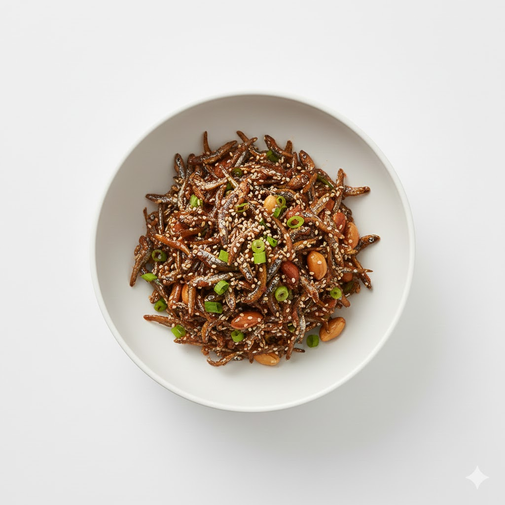

Stir-fried Anchovies
A popular savory and sweet side dish made from small dried anchovies coated in a sticky soy sauce glaze.
Ingredients
- Add your ingredients here
Instructions
- Add your cooking steps here.
A popular savory and sweet side dish made from small dried anchovies coated in a sticky soy sauce glaze.